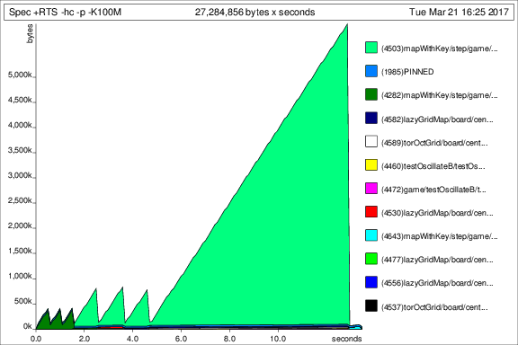

Who needs HashLife when you have comonads?
March 17, 2017Introduction
I’m going to talk a little bit about Conway’s Game of Life, comonads in practical use, and the performance improvement that they have to offer. If you already know what the GoL is, skip the introduction, and if you’re already familiar with comonads and how they are defined in Haskell, feel free to skip down to the performance section.
What is the Game of Life?
Conway’s Game of Life is a cellular automaton of simple cells, each following simple rules, from which very complex behavior emerges under the right conditions. It is one of many examples of complex systems.
In a nutshell, there is a 2D grid of cells, each of which has two possible states: alive or dead. The grid evolves in discrete steps of time t. At time t = 0, we give the board some initial state. For all t > 0, the grid evolves to step t + 1 based on these simple rules:
- Any live cell with exactly two or three live neighbours stays alive.
- Any dead cell with exactly three live neighbours becomes alive.
- All other cells die.
A naive implementation
Yesterday I finished a little terminal application to play around with the GoL (link set to “initial” version before comonads). As you can guess from the rules above, the GoL is very easy to program; the difficulty is in programming it efficiently. One well known method of computing the game is known as HashLife, which is a pretty objectively complex technique. (Someone did this, or some of it, in Haskell here.)
In my first pass at this, instead of creating a custom data structure directly I opted to leverage grid which is a really cool library that is useful for exploring mathematical grids/graphs/lattices:
import Math.Geometry.Grid (Index)
import Math.Geometry.Grid.Octagonal (TorOctGrid)
import Math.Geometry.GridMap.Lazy (LGridMap)
data St = Alive | Dead
type Board = LGridMap TorOctGrid St
type Cell = Index BoardIt was nice to do this first because I got a lot for free. Essentially my board looks like a mapping of (x,y) coordinates to cell states. In fact, the toList function that we get from the Grid typeclass confirms this:
λ> toList $ blinker 3 3
[((0,0),Dead),((0,1),Alive),((0,2),Dead),((1,0),Dead),((1,1),Alive),((1,2),Dead),((2,0),Dead),((2,1),Alive),((2,2),Dead)]I even get a neighbours function that returns all 8 neighbours of a cell along with many more useful functions, so implementing game evolution was very straightforward:
step :: Board -> Board
step b = GM.mapWithKey rule b
where rule :: Cell -> St -> St
rule c Dead
| liveNeighbors c == 3 = Alive
| otherwise = Dead
rule c Alive
| liveNeighbors c == 2 = Alive
| liveNeighbors c == 3 = Alive
| otherwise = Dead
liveNeighbors :: Cell -> Int
liveNeighbors c = population $
GM.filterWithKey (const . (`elem` neighbours b c)) $ b
population :: Board -> Int
population = length . filter (==Alive) . GM.elemsFurthermore, using the toroidal style of grid allows modular boundaries which is how I wanted to implement this version.
So, you can see I was able to speed through the actual GoL logic since most of the tedious legwork was done in the grid package. My real challenge and where I spent the most effort was in the frontend, rendering and handling user interaction from a terminal. I chose to use brick which is a fantastic package that provides a high level declarative API to develop terminal interface applications along with a number of useful widgets - not to mention 17 awesome demo programs, great documentation, and a responsive google group. If you’re curious, this is how I rendered the above implementation using the brick library. But, this post is not about brick. Maybe that will come in the future.
Comonads
Like any good Haskeller I’d like to leverage whatever abstractions I can to improve the elegance and performance of this codebase. As it turns out, cellular automata are well represented by comonads.
Definition
Let’s consider what the dual of the Monad type looks like:
-- Monad definition (adapted)
class Functor => Monad m where
return :: a -> m a
join :: m (m a) -> m a
bind :: (a -> m b) -> (m a -> m b)
-- Comonad definition
-- Minimum defintion: extract, (duplicate | extend)
class Functor => Comonad m where
extract :: m a -> a -- aka co-return
duplicate :: m a -> m (m a) -- aka co-join
extend :: (m b -> a) -> (m b -> m a) -- aka co-bindAs anyone else on the internet would say, the dual of something is when its “arrows are flipped around”, which at first sounds like handwavey nonsense. Head here for an excellent explanation of duality and how it applies to types in Haskell. I don’t want to get lost in the forest or duplicate content on the internet, so click that link or be satisfied with the fact that the arrows are literally flipped in the type signatures above.
I don’t want to get bogged down in category theory land - if you want to go down that path, see my resources. Instead, let’s just build up intuition with some examples.
Examples
The intuition we are trying to garner is that while monads produce effectful computations, comonads are consumed in context-sensitive computations. They usually come in handy when there is some large data structure that is composed of small, similar computations. Sound familiar?
Stream
This is probably the simplest example, almost canonical to comonads:
data Stream a = Cons a (Stream a)
instance Functor Stream where
fmap f (Cons x xs) = Cons (f x) (fmap f xs)
instance Comonad Stream where
extract :: Stream a -> a
extract (Cons x _) = x
duplicate :: Stream a -> Stream (Stream a)
duplicate s@(Cons _ xs) = Cons s (duplicate xs)
extend :: (Stream a -> b) -> Stream a -> Stream b
extend f s@(Cons _ xs) = Cons (f s) (extend f xs)So extract is like head and duplicate is like tails. extend on the other hand looks a little fmap-y:
fmap :: ( a -> b) -> Stream a -> Stream b
extend :: (Stream a -> b) -> Stream a -> Stream bWell, it’s sort of similar to fmap but the type signature is slightly different in that the function argument f :: Stream a -> b accepts its first argument already of type Stream a. Consequently, f can know or be context-aware of the comonadic structure when it produces its return value of type b. This is where the power of comonad really shines. In this case, the context that f is aware of at each function call when mapping over the stream is a current element x (we’ll say at the current “cursor”) along with the whole tail of the list from x onwards.
This observation lends itself to the intuition we set out to build, namely that monads produce additional context while comonads are consumed within a context.
bind :: (a -> m b) -> m a -> m b
extend :: (m a -> b) -> m a -> m bNote that bind accepts a function g :: a -> m b that takes an a value and produces a contextual value m b. Contrast this with extend accepting a function f :: m a -> b which has f consuming the contextual value m a.
Zipper
-- (elems to the left) (cursor) (elems to the right)
data Zipper a = Zipper [a] a [a]
-- moving the cursor (not changing any values, per se)
left, right :: Zipper a -> Zipper a
left (Zipper (l:ls) x rs) = Zipper ls l (x:rs)
right (Zipper ls x (r:rs)) = Zipper (x:ls) r rs
instance Functor Zipper where
fmap f (Zipper l x r) = Zipper (fmap f l) (f x) (fmap f r)
instance Comonad Zipper where
extract (Zipper _ x _) = x
duplicate z = Zipper (iterate' left z) z (iterate' right z)
where iterate' f = drop 1 . iterate fHere’s what this looks like in practice:
λ> let z = Zipper [(-1),(-2)..] 0 [1..]
λ> let take' n (Zipper l x r) = (Zipper (take n l) x (take n r))
λ> take' 5 z
Zipper [-1,-2,-3,-4,-5] 0 [1,2,3,4,5]
-- duplicate
λ> take' 5 $ fmap (take' 5) $ duplicate $ z
Zipper
[ Zipper [-2,-3,-4,-5,-6] (-1) [0,1,2,3,4]
, Zipper [-3,-4,-5,-6,-7] (-2) [-1,0,1,2,3]
, Zipper [-4,-5,-6,-7,-8] (-3) [-2,-1,0,1,2]
, Zipper [-5,-6,-7,-8,-9] (-4) [-3,-2,-1,0,1]
,Zipper [-6,-7,-8,-9,-10] (-5) [-4,-3,-2,-1,0]
]
(Zipper [-1,-2,-3,-4,-5] 0 [1,2,3,4,5])
[ Zipper [0,-1,-2,-3,-4] 1 [2,3,4,5,6]
, Zipper [1,0,-1,-2,-3] 2 [3,4,5,6,7]
, Zipper [2,1,0,-1,-2] 3 [4,5,6,7,8]
, Zipper [3,2,1,0,-1] 4 [5,6,7,8,9]
, Zipper [4,3,2,1,0] 5 [6,7,8,9,10]
]
-- extend . extract
λ> take' 5 $ extend extract z
Zipper [-1,-2,-3,-4,-5] 0 [1,2,3,4,5] -- this makes sense, also is a law!
-- extend (without leveraging context)
λ> take' 5 $ extend (\(Zipper _ x _) -> 2 * x) z
Zipper [-2,-4,-6,-8,-10] 0 [2,4,6,8,10]
-- extend (looking to the immediate left and right)
λ> take' 5 $ extend (\(Zipper (l:_) x (r:_)) -> l + 2 * x + r) z
Zipper [-4,-8,-12,-16,-20] 0 [4,8,12,16,20]
λ> take' 5 $ extend (\(Zipper (l:_) x (r:_)) -> intercalate "," . map show $ [l,x,r]) z
Zipper
["-2,-1,0","-3,-2,-1","-4,-3,-2","-5,-4,-3","-6,-5,-4"]
"-1,0,1"
["0,1,2","1,2,3","2,3,4","3,4,5","4,5,6"]Hopefully these examples show how comonads are a very fitting solution to computing cellular autamata. Again, refer to resources if you are unsatisfied, as there’s plenty of content to read up on.
Applying to the Game of Life
I want to change as little as possible from my current implementation - ideally just swap out the data structure and change very little in my frontend and test suite. I hit this mark fairly well, as my commit updating the executable only diffs by +15/-17.
My implementation is similar to my sources, but unique in the toroidal aspect. My base 1-dimensional zipper is defined as
import qualified Data.Sequence as S
-- | One dimensional finite list with cursor context
--
-- The first element of the sequence at '_zl' can be thought of as
-- /to the left/ of the cursor, while the last element is
-- /to the right/ of the cursor.
-- The cursor value and index are '_zc' and '_zi' respectively.
-- This can be thought of as a circle.
-- Warning: must have length greater than zero!
data Z a = Z { _zl :: S.Seq a
, _zc :: a
, _zi :: Int
} deriving (Eq, Show)So “shifting left” will focus the first element of _zl and snoc _zc to _zl, while “shifting right” will focus the last element of _zl and cons _zc to _zl. I chose Data.Sequence because it has a nice API and is symmetric in time complexities when viewing either end of the sequence.
So the Game of Life is then implemented as a nested Z (Z a):
-- | A modular game of life board
--
-- With this interpretation, for a board of size @n x n@
-- the @(n + 1)@th column/row is the same as the boundary
-- at the @1@st column/row.
type Board = ZZ St
-- | Indexer for the 'Board'
type Cell = (Int, Int)
-- | Possible cell states
data St = Alive | Dead
deriving (Eq)
newtype ZZ a = ZZ { _unzz :: Z (Z a) }
deriving (Eq)You might be wondering where that Cell indexer comes into play. I ended up creating a Zipper class, which was a nice pattern because once Z had a Zipper instance, I could easily polymorphically use those class functions when writing the instance for the newtype ZZ. The class is larger than it needs to be, as I’m not even currently using all of its methods, but I think it is fairly future proof if I want to add more features to the app:
-- | Class for a modular bounded container
--
-- Examples of functions provided for a simple one dimensional list, where appropriate
class Zipper z where
type Index z
data Direction z
-- | Shift in a direction
shift :: Direction z -> z a -> z a
-- | Retrieve current cursor value
cursor :: z a -> a
-- | Retrieve current index value
index :: z a -> Index z
-- | Retrieve neighborhood of current cursor.
neighborhood :: z a -> [a]
-- | Destruct to list maintaining order of @(Index z)@, e.g. @(Z ls c rs) -> ls ++ [c] ++ rs@.
toList :: z a -> [a]
-- | Destruct a list into a mapping with indices
toMap :: (Comonad z) => z a -> [(Index z, a)]
toMap = toList . extend ((,) <$> index <*> cursor)
-- | Construct zipper from mapping (provide default value so this is always safe, no bottoms)
fromMap :: Ord (Index z) => a -> [(Index z, a)] -> z a
-- | Lookup by possibly denormalised index (still safe from modularity).
--
-- e.g. [1,2] ! 2 == 1
(!) :: z a -> (Index z) -> a
-- | Adjust value at specified index
adjust :: (a -> a) -> Index z -> z a -> z a
-- | Update value at specified index
update :: a -> Index z -> z a -> z a
update = adjust . const
-- | Normalize @Index z@ value with respect to modular boundaries
normalize :: z a -> (Index z) -> (Index z)
-- | Get size (maximum of @Index z@).
size :: z a -> (Index z)I don’t want there to be a billion lines of code in this article, so feel free to check out the source if you want to see how those instances are defined for Z and ZZ. Once they are defined, writing the Comonad instance is much easier:
instance Comonad Z where
extract = cursor
duplicate z = Z (S.fromFunction (size z - 1) fn) z (z ^. zi)
where fn k = compose (k + 1) (shift L) $ z
instance Comonad ZZ where
extract = cursor
duplicate z = ZZ $ Z
(fromF (xT - 1) mkCol) (Z (fromF (yT - 1) (mkRow z)) z y) x
where
mkRow zx j = compose (j + 1) (shift S) zx
mkCol i = let zx = compose (i + 1) (shift W) z
in Z (fromF (yT - 1) (mkRow zx)) zx (zx ^. to index ^. _2)
(xT,yT) = size z
(x,y) = index z
fromF = S.fromFunction
compose :: Int -> (a -> a) -> (a -> a)
compose = (foldr (.) id .) . replicateIt looks a little messy, but that’s probably just me being an amateur. Really all that duplicate needs to do is, for all indices (i,j), replace the element at (i,j) with the argument z shifted west i times and shifted south j times; that is, the argument z with cursor/index focused at (i,j).
Finally, with Zipper and Comonad instances in place, here is the new step:
step :: Board -> Board
step = extend rule
where p = length . filter (==Alive) . neighborhood
rule z = case (cursor z, p z) of
(Alive, 2) -> Alive
(Alive, 3) -> Alive
(Dead, 3) -> Alive
_ -> DeadPerformance
My profiling methodology for each of the scenarios below is to simply measure against the test suite, which does quite a bit of computing and comparison of evolved games. Below are the commands I used to generate the results:
$ stack ghc -- test/Spec.hs -prof -fprof-auto -rtsopts -O2
$ cd test
$ ./Spec +RTS -hc -p -K100M
# getting a web friendly view of heap profiler
$ hp2ps -e8in -c Spec.hp
$ convert Spec.ps heap.pngInitial
Here are some profiling details from the first implementation, which mapped across the board while performing lookups to retrieve the neighborhood values:
- Time: 13.22 secs
- Memory: 5.50 GB
- Spec.prof & Spec.ps
Spec +RTS -hc -p -K100M -RTS
total time = 13.22 secs (13219 ticks @ 1000 us, 1 processor)
total alloc = 5,495,113,024 bytes (excludes profiling overheads)
COST CENTRE MODULE SRC %time %alloc
filterWithKey Math.Geometry.GridMap.Lazy src/Math/Geometry/GridMap/Lazy.hs:117:3-67 94.9 75.5
neighboursWrappedBasedOn Math.Geometry.GridInternal src/Math/Geometry/GridInternal.hs:(295,1)-(296,64) 2.5 11.4
normalise Math.Geometry.Grid.OctagonalInternal src/Math/Geometry/Grid/OctagonalInternal.hs:(132,3)-(133,25) 1.0 4.3
population Life src/Life.hs:(120,1)-(122,20) 0.6 4.7
elems Math.Geometry.GridMap src/Math/Geometry/GridMap.hs:266:3-25 0.2 1.7
Quite a bit of memory spent in the step function.
Comonads to the rescue
Now that the function evolving the game has cursor context and easy access to each cursor’s neighborhood, just a few O(1) lookups at the front and back of Data.Sequence.Seq a containers, performance improves drammatically.
- Time: 1.08 secs
- Memory: 3.95 GB
- Spec.prof & Spec.ps
Spec +RTS -hc -p -K100M -RTS
total time = 1.08 secs (1079 ticks @ 1000 us, 1 processor)
total alloc = 3,946,769,872 bytes (excludes profiling overheads)
COST CENTRE MODULE SRC %time %alloc
fmap Life src/Life.hs:158:3-41 27.1 22.9
shift Life src/Life.hs:(147,3)-(155,38) 25.3 42.1
shift.(...) Life src/Life.hs:152:7-27 13.6 22.1
compose Life src/Life.hs:298:1-38 10.5 5.4
neighborhood Life src/Life.hs:(136,3)-(138,59) 4.3 1.5
step.p Life src/Life.hs:256:9-52 3.2 0.4
neighborhood.ew Life src/Life.hs:196:11-43 2.8 2.7
== Life src/Life.hs:70:26-27 2.2 0.7
shift.xs Life src/Life.hs:152:7-27 1.7 0.0
duplicate.mkRow Life src/Life.hs:215:7-47 1.4 0.2
cursor Life src/Life.hs:174:3-28 1.2 0.2
duplicate.mkCol Life src/Life.hs:(216,7)-(217,80) 1.2 0.5

Comparison
Running the test suite with the second data structure decreased the overall time by 92% and the overall memory allocation by 28%.
Further reading
For more in-depth reading on category theory and comonads, here are my sources:
- Duality for Haskellers - EZ Yang
- Flipping arrows in coBurger King - EZ Yang
- Comonad presentation - Kenny Foner
- ComonadSheet source code - Kenny Foner
- Another comonad presentation - David Overton